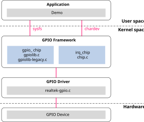
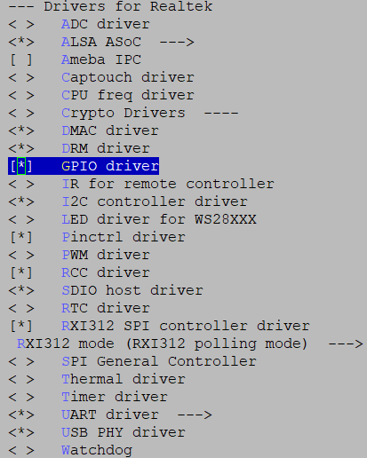
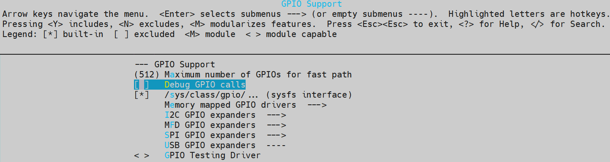
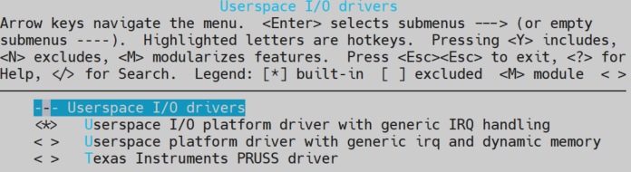

通用输入输出口 (GPIO)
介绍
架构
GPIO 驱动程序遵循 Linux 的 GPIO 子系统。GPIO 库为用户空间提供 GPIO 接口。GPIO 软件架构在下图中展示。
{kind=link}

获取更多有关 Linux GPIO 系统的细节，请参考 GPIO drvier v5.4 或者 GPIO drvier v6.6 。
实现
GPIO 驱动程序实现于以下文件中：
驱动位置 |
介绍 |
|---|---|
<linux>/drivers/rtkdrivers/gpio/Kconfig |
GPIO 驱动程序 Kconfig |
<linux>/drivers/rtkdrivers/gpio/Makefile |
GPIO 驱动程序 Makefile |
<linux>/drivers/rtkdrivers/gpio/realtek-gpio.c |
GPIO 函数 |
<linux>/drivers/rtkdrivers/gpio/realtek-gpio.h |
GPIO 相关的函数声明、宏定义、结构定义以及引用的其他头文件 |
配置
设备树配置
GPIO 设备树节点：
gpioa: gpio@4200D000 {
compatible = "realtek,ameba-gpio";
gpio-controller;
#gpio-cells = <2>;
reg = <0x4200D000 0x400>;
rtk,gpio-bank = <0>;
interrupt-controller;
#interrupt-cells = <2>;
interrupts = <GIC_SPI 9 IRQ_TYPE_LEVEL_HIGH>;
clocks = <&rcc RTK_CKE_GPIO>;
};
gpiob: gpio@4200D400 {
compatible = "realtek,ameba-gpio";
gpio-controller;
#gpio-cells = <2>;
reg = <0x4200D400 0x400>;
rtk,gpio-bank = <1>;
interrupt-controller;
#interrupt-cells = <2>;
interrupts = <GIC_SPI 10 IRQ_TYPE_LEVEL_HIGH>;
clocks = <&rcc RTK_CKE_GPIO>;
};
gpioc: gpio@4200D800 {
compatible = "realtek,ameba-gpio";
gpio-controller;
#gpio-cells = <2>;
reg = <0x4200D800 0x400>;
rtk,gpio-bank = <2>;
interrupt-controller;
#interrupt-cells = <2>;
interrupts = <GIC_SPI 11 IRQ_TYPE_LEVEL_HIGH>;
clocks = <&rcc RTK_CKE_GPIO>;
};
GPIO 的设备树配置在下表中列出：
属性 |
描述 |
默认值 |
可配置？ |
|---|---|---|---|
compatible |
GPIO 驱动程序的描述。 |
realtek,ameba-gpio |
否 |
reg |
GPIO 设备的硬件地址和大小。
|
否 |
|
interrupts |
GPIO 设备的 GIC 数量
|
否 |
|
gpio-controller |
指示设备节点是一个 GPIO 控制器。 |
否 |
|
#gpio-cells |
指示具体描述一个 GPIO 所需的单元数量。 |
2 |
否 |
interrupt-controller |
指示设备节点是一个中断控制器。 |
否 |
|
#interrupt-cells |
指示具体描述一个 GPIO 中断所需的单元数量。 |
2 |
否 |
realtek,gpio-bank |
GPIO 端口索引 0: portA 1: portB 2: portC |
否 |
|
clocks |
GPIO 驱动程序的时钟。 |
否 |
编译配置
选择 :
{kind=link}

用户空间接口（APIs）
sysfs
使用 gpiolib 实现者框架的平台可以选择为 GPIO 配置一个 sysfs 用户接口。
编译配置
选择 :
{kind=link}

sysfs 节点
节点 |
介绍 |
取值 |
|---|---|---|
/sys/class/gpio/export |
打开 GPIO |
GPIO pin 编号 |
/sys/class/gpio/unexport |
关闭 GPIO |
GPIO pin 编号 |
/sys/class/gpio/gpioX/direction |
GPIO 方向 |
入/出 |
/sys/class/gpio/gpioX/value |
GPIO 取值 |
0/1 |
/sys/class/gpio/gpioX/active_low |
GPIO 低电平激活 |
0/1 |
/sys/class/gpio/gpioX/edge |
GPIO pin 脚边缘触发类型 |
无/上升沿/下降沿/皆可 |
备注
X 表示 GPIO 编号。
上述 gpioX 路径下列出的属性文件都是可读写的。
用途
操作引脚时，第一步是确定其编号。 该芯片支持三个独立的GPIO IP：Port A（0~31）、Port B（0~31）和Port C（0~7）。 BSP GPIO驱动程序为所有引脚统一编号，从0到71。例如，GPIOA-0的引脚编号是0，GPIOC-7的引脚编号是71。
或者，你可以通过gpiochipX中的base文件获取该组GPIO编号的起始值，然后用这个起始值加上组内引脚的偏移量，就得到该GPIO引脚的编号。
gpiochipX |
label (GPIOA/B/C) |
base |
ngpio |
|---|---|---|---|
gpiochip0 |
GPIO0 |
0 |
32 |
gpiochip32 |
GPIO1 |
32 |
32 |
gpiochip64 |
GPIO2 |
64 |
8 |
备注
Base: pin 脚的起始编号。
Ngpio: 这个端口有多少 pin 脚。
X = base + offset，例如，GPIOB-8 的引脚编号 X = 32 + 8 = 40。
Shell
命令 |
介绍 |
|---|---|
echo X > /sys/class/gpio/export |
打开 GPIO |
echo X > /sys/class/gpio/unexport |
关闭 GPIO |
echo out > /sys/class/gpio/gpioX/direction |
设置 GPIO 的方向为出 |
echo in > /sys/class/gpio/gpioX/direction |
设置 GPIO 的方向为入 |
echo 1 > /sys/class/gpio/gpioX/value |
把 GPIO 的值设置为 1 |
echo 0 > /sys/class/gpio/gpioX/value |
把 GPIO 的值设置为 0 |
echo 1 > /sys/class/gpio/gpioX/active_low |
设置 GPIO 为低电平激活 |
echo 0 > /sys/class/gpio/gpioX/active_low |
设置 GPIO 为高电平激活 （默认） |
echo none > /sys/class/gpio/gpioX/edge |
将 GPIO 设置为非中断引脚 |
echo rising > /sys/class/gpio/gpioX/edge |
将 GPIO 引脚设置为上升沿触发 |
echo falling > /sys/class/gpio/gpioX/edge |
将 GPIO 引脚设置为下降沿触发 |
echo both > /sys/class/gpio/gpioX/edge |
将 GPIO 引脚设置为上升、下降沿触发 |
cat /sys/class/gpio/gpioX/direction |
获取 GPIO 的方向 |
cat /sys/class/gpio/gpioX/value |
获取 GPIO 的取值 |
cat /sys/class/gpio/gpioX/edge |
获取 GPIO 的边缘触发类型 |
cat /sys/class/gpio/gpioX/active_low |
获取 GPIO 低电平有效设置 |
输出测试
将一个 GPIO 引脚导出到用户空间。
echo X > /sys/class/gpio/export
将 GPIO 方向设置为输出。
echo out > /sys/class/gpio/gpioX/direction
将 GPIO 逻辑值设置为 1。
echo 1 > /sys/class/gpio/gpioX/value
将 GPIO 逻辑值设置为 0。
echo 0 > /sys/class/gpio/gpioX/value
取消导出 GPIO 引脚。
echo X > /sys/class/gpio/unexport
输入测试
导出一个 GPIO 引脚到用户空间。
echo X > /sys/class/gpio/export
将 GPIO 方向设置为输入。
echo in > /sys/class/gpio/gpioX/direction
获取 GPIO 的逻辑值。
cat /sys/class/gpio/gpioX/value
取消导出 GPIO 引脚。
echo X > /sys/class/gpio/unexport
应用
根据上面的读写文件方法编写测试代码。
输出测试
导出一个 GPIO 引脚到用户空间。
int export_fd = open("/sys/class/gpio/export", O_WRONLY); write(export_fd, "X", sizeof("X")); close(export_fd);
将 GPIO 方向设置为输出。
int direction_fd = open("/sys/class/gpio/gpioX/direction", O_WRONLY); write(direction_fd, "out", sizeof("out")); close(direction_fd);
将 GPIO 逻辑值设置为 1。
int gpiovalue_fd = open("/sys/class/gpio/gpioX/value", O_WRONLY); write(gpiovalue_fd, "1", sizeof("1")); close(gpiovalue_fd);
将 GPIO 逻辑值设置为 0。
int gpiovalue_fd = open("/sys/class/gpio/gpioX/value", O_WRONLY); write(gpiovalue_fd, "0", sizeof("0")); close(gpiovalue_fd);
取消导出 GPIO 引脚。
int unexport_fd = open("/sys/class/gpio/unexport", O_WRONLY); write(unexport_fd, "X", sizeof("X")); close(unexport_fd);
输入测试
将一个 GPIO 引脚导出到用户空间。
int export_fd = open("/sys/class/gpio/export", O_WRONLY); write(export_fd, "X", sizeof("X")); close(export_fd);
将 GPIO 方向设置为输入。
int direction_fd = open("/sys/class/gpio/gpioX/direction", O_WRONLY); write(direction_fd, "in", sizeof("in")); close(direction_fd);
获取 GPIO 的逻辑值。
char value; int gpiovalue_fd = open("/sys/class/gpio/gpioX/value", O_RDONLY); read(gpiovalue_fd, &value, 1); close(gpiovalue_fd);
取消导出 GPIO 引脚。
int unexport_fd = open("/sys/class/gpio/unexport", O_WRONLY); write(unexport_fd, "X", sizeof("X")); close(unexport_fd);
中断测试
将一个 GPIO 引脚导出到用户空间。
int export_fd = open("/sys/class/gpio/export", O_WRONLY); write(export_fd, "X", sizeof("X")); close(export_fd);
将 GPIO 方向设置为输入。
int direction_fd = open("/sys/class/gpio/gpioX/direction", O_WRONLY); write(direction_fd, "in", sizeof("in")); close(direction_fd);
设置 GPIO 触发类型。触发类型可以设置为以下值之一：
rising，falling，both。int edge_fd = open("/sys/class/gpio/gpioX/edge", O_WRONLY); write(edge_fd, "rising", sizeof("rising")); close(edge_fd);
轮询 GPIO 值以等待中断发生，并在中断发生时读取 GPIO 值。
char val; struct pollfd pfd; pfd.events = POLLPRI; pfd.fd = open("/sys/class/gpio/gpioX/value", O_RDONLY); int ret = poll(&pfd, 1, -1); if ((ret > 0) && (pfd.revents & POLLPRI)) { read(pfd.fd, &val, 1)); }
取消导出 GPIO 引脚。
int unexport_fd = open("/sys/class/gpio/unexport", O_WRONLY); write(unexport_fd, "X", sizeof("X")); close(unexport_fd);
字符设备
GPIO 可以用作字符设备，GPIO 控制器字符设备为 /dev/gpiochipX 。
可以通过 ioctl 操作获取 gpiochip 信息并测试特定的 GPIO 引脚。
备注
/dev/gpiochip0 GPIOA
/dev/gpiochip1 GPIOB
/dev/gpiochip2 GPIOC
IOCTL 命令
IOCTL 命令的定义在 linux/gpio.h 中，因此用户主应用程序必须包含 linux/gpio.h 。
IOCTL 命令 |
描述 |
|---|---|
GPIO_GET_CHIPINFO_IOCTL |
获取 gpiochip 信息，包括名称标签以及该 gpiochip 的 GPIO 线路数量。 |
GPIO_GET_LINEINFO_IOCTL |
获取 GPIO 线路信息，包括特定引脚信息，例如名称和标志。 |
GPIO_GET_LINEHANDLE_IOCTL |
获取特定线路的控制权，然后对文件描述符执行读写操作。 |
GPIO_GET_LINEEVENT_IOCTL |
获取特定线路的事件控制权，当中断发生时，读取操作可以获得中断触发的时间戳。 |
用途
获取 GPIO 测试信息
打开 GPIO 字符设备。
int fd = open("/dev/gpiochp0", O_WRONLY);
获取 GPIO 芯片信息。
struct gpiochip_info info; ioctl(fd, GPIO_GET_CHIPINFO_IOCTL, &info);//get GPIOA information
获取 GPIO 线路信息。
struct gpioline_info line_info; line_info.line_offset = X;//get GPIOA pin X information ioctl(fd, GPIO_GET_LINEINFO_IOCTL, &line_info);
关闭 GPIO 字符设备。
close(fd);
输出测试
打开 GPIO 字符设备。
int fd = open("/dev/gpiochp0", O_WRONLY);
获取特定 GPIO 线路句柄。
struct gpiohandle_request rq; rq.lineoffsets[0] = offset;//offset in this gpio chip rq.flags = GPIOHANDLE_REQUEST_OUTPUT; rq.lines = 1;//one pin ioctl(fd, GPIO_GET_LINEHANDLE_IOCTL, &rq); close(fd);
设置 GPIO pin 脚取值。
struct gpiohandle_data data; data.values[0] = value; ioctl(rq.fd, GPIOHANDLE_SET_LINE_VALUES_IOCTL, &data);
关闭 GPIO 字符设备。
close(rq.fd);
输入测试
打开 GPIO 字符设备。
int fd = open("/dev/gpiochp0", O_WRONLY);
获取特定 GPIO 线路句柄。
struct gpiohandle_request rq; rq.lineoffsets[0] = offset; rq.flags = GPIOHANDLE_REQUEST_OUTPUT; rq.lines = 1; ioctl(fd, GPIO_GET_LINEHANDLE_IOCTL, &rq); close(fd);
获取 GPIO pin 脚取值。
struct gpiohandle_data data; ioctl(rq.fd, GPIOHANDLE_GET_LINE_VALUES_IOCTL, &data); printf("Read value:%d\n",data.values[0]);
关闭 GPIO 字符设备。
close(rq.fd);
中断测试
打开 GPIO 字符设备。
int fd = open("/dev/gpiochp0", O_WRONLY);
获取特定 GPIO 线路事件句柄。触发类型可以设置为以下值之一：GPIOEVENT_EVENT_RISING_EDGE，GPIOEVENT_EVENT_FALLING_EDGE，（GPIOEVENT_EVENT_FALLING_EDGE|GPIOEVENT_EVENT_RISING_EDGE）。
struct gpioevent_request event_req; event_req.lineoffset = offset; event_req.handleflags = GPIOHANDLE_REQUEST_INPUT;//must set event_req.eventflags = GPIOEVENT_EVENT_RISING_EDGE; ioctl(fd, GPIO_GET_LINEEVENT_IOCTL, &event_req); close(fd);
轮询 GPIO 值以等待中断发生，并获取中断触发时间戳。
struct gpioevent_data event_data; struct pollfd pfd; pfd.fd = event_req.fd; pfd.events = POLLIN; int ret = poll(&pfd, 1, -1); if ((ret > 0)&&(pfd.revents & POLLIN)) { read(event_req.fd, &event_data, sizeof(event_data)); printf("event_data.timestamp:%llu,.id:%d \n",event_data.timestamp, event_data.id);//id for edge trigger type, 1:rising edge,2:falling edge. }
关闭 GPIO 字符设备。
close(event_req.fd);
UIO
每个 UIO 设备通过一个设备文件和多个 sysfs 属性文件进行访问。
第一个设备的设备文件将被称为 /dev/uio0，随后的设备将依次命名为 /dev/uio1、/dev/uio2，等等。
中断通过读取 /dev/uioX 来处理。当中断发生时，从 /dev/uioX 进行的阻塞 read() 会立即返回。
你也可以对 /dev/uioX 使用 poll() 来等待中断。从 /dev/uioX 读取的整数值表示总的中断计数。
你可以使用这个数字来判断是否错过了一些中断。
更多有关 Linux UIO 系统的细节，请参考 uio driver v5.4 或者 uio driver v6.6。
配置
设备树配置
GPIO 设备树 UIO 节点：
gpio-uio-test {
compatible = "generic-uio";
status = "okay";
interrupt-parent = <&gpioa>;
interrupts = <15 IRQ_TYPE_EDGE_BOTH>;
};
属性 |
描述 |
可配置 |
|---|---|---|
compatible |
UIO驱动程序的描述。默认值：“generic-uio”。 |
否 |
interrupt-parent |
GPIOA 组 |
是 |
interrupts |
该 GPIO 硬件中断号是 15，对应于 GPIOA 的引脚 15。 触发类型 IRQ_TYPE_EDGE_BOTH |
是 |
与此同时，在选择的节点的 bootargs 属性中添加 uio_pdrv_genirq.of_id=generic-uio 。
编译配置
选择 :
{kind=link}

用途
中断测试
打开 GPIO UIO 设备。
int uio_fd = open("/dev/uio0", O_RDWR);
写入 1 以取消屏蔽中断，每次都必须设置。
uint32_t uio_int = 1; write(uio_fd, &uio_int, sizeof(uio_int));
轮询 GPIO UIO 设备并等待中断发生，可以读取中断计数值。
struct pollfd pfd; int uio_int; pfd.events = POLLIN; pfd.fd =uio_fd; int ret = poll(&pfd, 1, -1); if (ret > 0) { read(pfd.fd, &uio_int, 1)); }
关闭 GPIO UIO 设备。
close(uio_fd);
内核空间接口（APIs）
Legacy APIs
API |
描述 |
|---|---|
gpio_request |
请求一个 GPIO |
gpio_direction_output |
设置 GPIO 方向为输出 |
gpio_direction_input |
设置 GPIO 方向为输入 |
gpio_set_value |
设置 GPIO 值（GPIO 处于输出方向） |
gpio_get_value |
获取 GPIO 值 |
gpio_free |
释放 GPIO |
gpio_export |
通过 sysfs 导出一个 GPIO |
gpio_unexport |
撤回 |
of_get_named_gpio_flags |
获取用于 GPIO API 的 GPIO 编号和标志 |
gpiochip_add_data |
注册一个 gpiochip |
gpiochip_remove |
注销一个 gpiochip |
gpio_set_debounce |
设置 GPIO 去抖动功能 |
gpio_to_irq |
获取 GPIO 引脚虚拟中断请求（IRQ） |
参考 <linux>/Documentation/driver-api/gpio/legacy.rst 获取更多细节。
基于描述符的 APIs
API |
描述 |
|---|---|
gpiod_get |
为给定的 GPIO 功能获取一个 GPIO |
gpiod_put |
释放 GPIO 描述符 |
gpiod_direction_output |
设置 GPIO 方向为输出 |
gpiod_direction_input |
设置 GPIO 方向为输入 |
gpiod_set_value |
分配 gpio 的值。（其上下文不能休眠） |
gpiod_get_value |
获取 gpio 的值。（其上下文不能休眠） |
gpiod_set_debounce |
设置 GPIO 去抖动功能 |
参考 <linux>/Documentation/driver-api/gpio/consumer.rst 获取更多细节。
用途
输出测试
获取 GPIO pin 脚索引。
gpio_index = of_get_named_gpio_flags(np, "test-gpios", 0, &flags);
请求一个 GPIO。
gpio_request(gpio_index, NULL);
设置 GPIO 方向为输出，初始化数值为 0。
gpio_direction_output(gpio_index, 0);
将逻辑值 1 写入输出端口的指定引脚。
gpio_set_value(gpio_index, 1);
从输出端口的指定引脚获取逻辑值，并检查该值。
gpio_get_value(gpio_index);
释放 GPIO pin 脚。
gpio_free(gpio_index);
输入测试
获取 GPIO pin 脚索引。
gpio_index = of_get_named_gpio_flags(np, "test-gpios", 0, &flags);
请求一个 GPIO。
gpio_request(gpio_index, NULL);
设置 GPIO 方向为输入。
gpio_direction_input(gpio_index);
将 GPIO 引脚外部上拉至高电平或下拉至低电平。
从输入端口的指定引脚获取逻辑值，并检查该值。
gpio_get_value(gpio_index);
释放 GPIO pin 脚。
gpio_free(gpio_index);
中断测试
获取 GPIO pin 脚索引。
gpio_index = of_get_named_gpio_flags(np, "test-gpios", 0, &flags);
初始化一个完成变量。
reinit_completion(struct completion *x);
请求一个 GPIO。
gpio_request(gpio_index, NULL);
获取 GPIO 虚拟中断号。
int virq = gpio_to_irq(gpio_index);
请求触发类型。触发类型可以设置为以下值之一： IRQF_TRIGGER_RISING， IRQF_TRIGGER_FALLING， IRQF_TRIGGER_HIGH， IRQF_TRIGGER_LOW， （IRQF_TRIGGER_FALLING | IRQF_TRIGGER_RISING）。
request_irq(virq, rtk_gpio_irq_handler, trigger_type, "gpio_irq", NULL);
GPIO 可以通过设置
rtk,db_enable = "okay"来配置是否包含去抖功能，并设置去抖时间。gpio_set_debounce(gpio_index,db_div_cnt);
备注
virq 是虚拟中断号，你可以使用 gpio_to_irq(gpio_index)() 来获取指定引脚的 virq。
外部触发，并等待任务完成。
wait_for_completion_timeout(struct completion *x, unsigned long timeout);
释放 IRQ。
free_irq(virq, NULL);
释放 GPIO pin 脚。
gpio_free(gpio_index);
有关更多详细信息，内核空间的 GPIO 示例位于 <test>/gpio 。请参考该目录下的 readme.txt 。